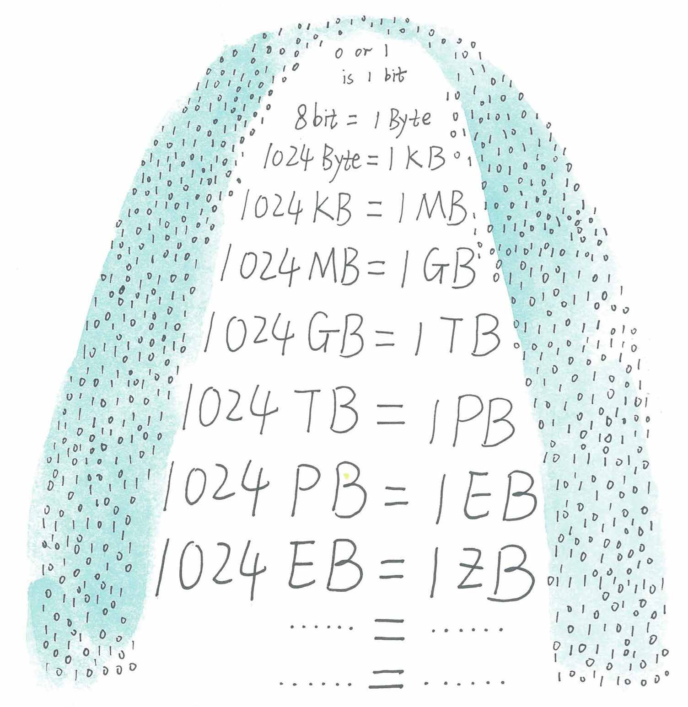
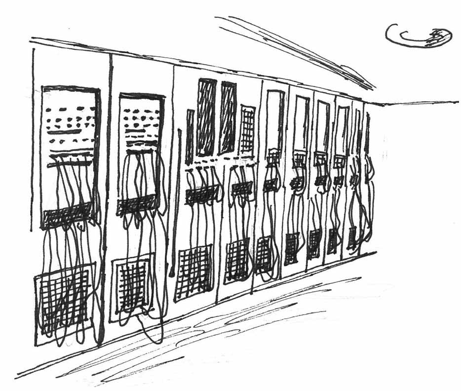
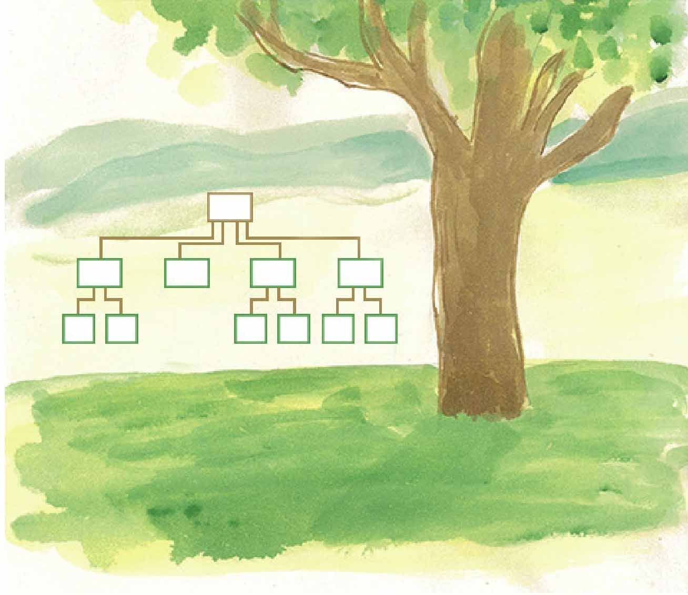
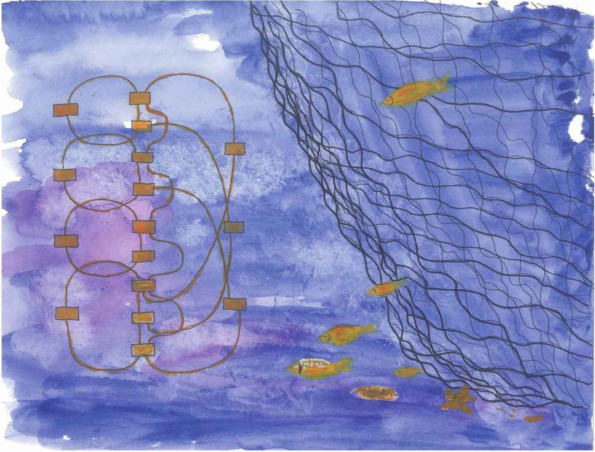

早在2012年，一组名为“互联网上一天”的数据告诉我们，一天之中，互联网产生的全部内容可以刻满1.68亿张DVD；发出的电子邮件有2940亿封之多（相当于美国两年的纸质信件数量）。Google是全球最大的搜索引擎，2015年的数据显示Google代码量达20亿行，其代码库每天处理85TB数据。2019年6月，全球互联网用户数达到44亿，这44亿人每天都在产生海量的数据，那么，这些数据是如何存储和管理的呢？
小文，你知道，数据的最小单位是bit，8个bit构成一个字节（Byte），1024个字节就是1KB（1KB=1024B），随着处理信息量的增多，人们又定义了数据单位MB（1MB=1024KB）、GB（1GB=1024MB）、TB（1TB=1024GB）。曾几何时，人们觉得GB的数据单位已经够大了。但现在，数据量又从TB级别跃升到PB（1PB=1024TB）、EB（1EB=1024PB）乃至ZB（1ZB=1024EB）、YB（1YB=1024ZB）级别。
如果回顾一下计算机数据处理发展的历史，你会发现这一切发展实在太快，怪不得崔健老在唱——不是我不明白，是这世界变化快——哈哈。
大概70多年前，计算机还刚诞生不久，那时候的计算机体积十分庞大，但是功能非常单一，只能处理数字，不能处理字母和符号。
想在电脑上看小说？
在当时，那是不可想象的！
计算机不能处理字母和符号是很不方便的，所以到20世纪50年代初，人们发明了字符发生器，这时计算机才具有了显示、存储与处理字母和各种符号的能力。字符处理需要高效的存储设备来存放，人们又发明了磁带机，这些技术很大程度上提高了计算机的数据处理能力。
随后，人们又觉得磁带机的读写速度也慢了，人们又发明了磁盘。总之，计算机数据处理的硬件条件不断得到改善。

它曾经只识数，不识“字”
相较于硬件条件的改善，计算机数据处理的软件就有点跟不上了。
初期的数据处理软件只有文件管理这种形式，采用文件管理的形式管理数据问题很多，比如存在相同数据重复存放、数据前后不一致，程序的编制、维护困难等一系列的问题。
针对这些问题，学者专家埋头研究，一系列的探索与实验之后，出现了一种新的数据管理技术——数据库技术。
数据库可以形象地比喻为数据存放的仓库，仓库的结构设计合理才能更好地存放数据，当时的人们给数据库设计了这样的两种类型：层次型数据库和网状数据库。
形象地说，层次型数据库把数据的内在结构采用一棵倒置的树的形式来存放，它的灵感会不会来源于设计者树下散步时的思考呢？哈哈。

层次型数据库采用一种类似倒置的树的形式来存放数据
层次型数据库的出现克服了计算机文件管理系统的内在缺陷，很快地，Rockwell公司与IBM公司合作成功研制了一个层次型数据库管理系统——IMS（Information Management System），IMS为阿波罗飞船1969年的顺利登月作出了贡献。
但是现实世界中事物之间的联系更多的是非层次关系的，用层次模型去表示那些非树形结构的数据显得力不从心，网状模型数据库的出现克服了这一弊病。形象地说网状数据库采用一种类似渔网形状的数据结构，其灵感是否来自网状数据库之父的某次钓鱼不得而知。

网状数据库的网状模型
第一个网状数据库管理系统是美国通用电气公司的巴赫曼（Charles Bachman）等人在1964年开发成功的IDS（Integrated Data Store），巴赫曼由于这方面的贡献被公认为“网状数据库之父”，并获得了1973年的图灵奖。
层次型数据库和网状数据库的出现，使得计算机在数据处理方面的能力得到了极大提高。
新擂主——关系数据库